你需要两点来计算曲线的斜率或者导数
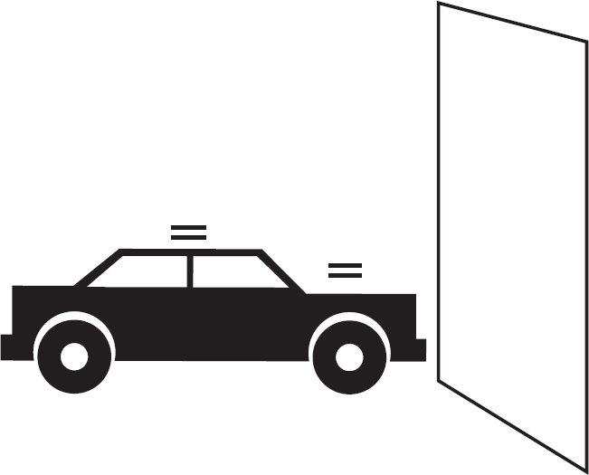
汽车离墙很近（但没有碰到它）
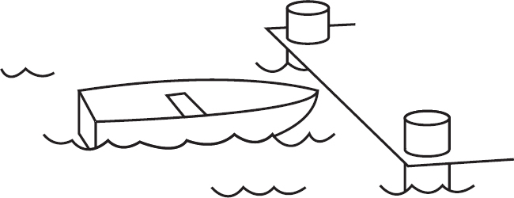
船无限接近码头（但没有碰到它）
极限符号：h接近0
但从未达到（或等于）0
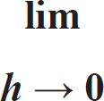
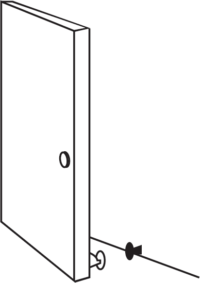
极限像门吸一样，保持门无限接近但不能接触到墙壁
■曲线的导数
代数
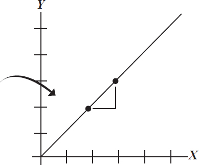
直线斜率
微积分
你需要两点来计算曲线的斜率或者导数
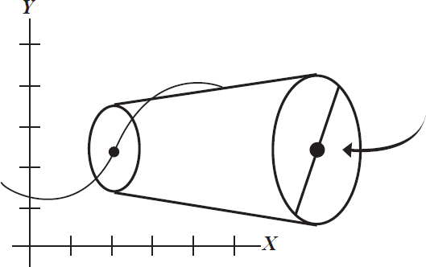
一条曲线，当无限缩短时，几乎成了直线
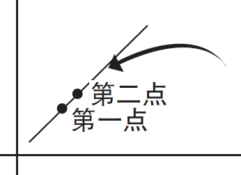
当曲线无限缩短时，它看起来是直的。第二个点可以非常接近第一个点，但不接触——极限。有两个点，斜率可以用斜率公式求得
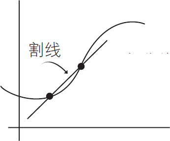
一条曲线上两点之间的直线称为割线
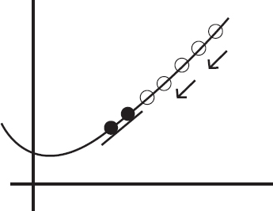
使第二个点无限接近第一个点但不等于第一个点，可以推导出第一个点的导数或者斜率

曲线的这一点的斜率或变化率或导数是由这个公式确定的：
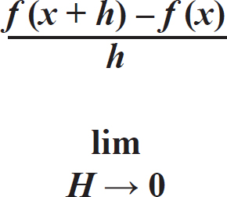
需要准备的东西：
►纸板
►回形针或黄铜纸扣
►CD或DVD或罗盘
►剪刀
►铅笔
►透明胶带
►纸
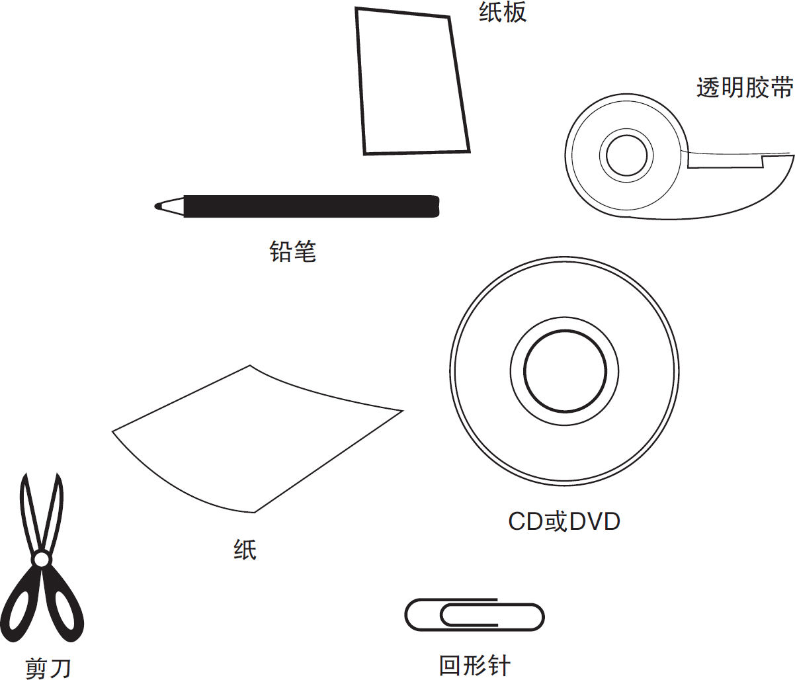
你可以使用下一页的插图作为实验参考，并按步骤操作。
首先，用纸板制作一张CD或DVD大小的圆盘，或者用罗盘来制作直径为3厘米的圆盘，如图4-8所示。
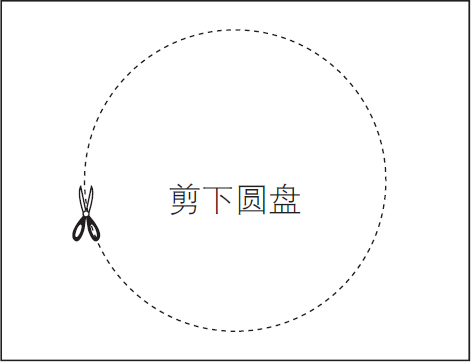
图4-8
接下来，剪出如图4-9所示的矩形纸盖子，包括“窗口”孔。或者，你也可以用铅笔画虚线，然后沿着虚线慢慢剪开窗口的部分。
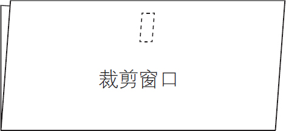
图4-9
把纸盖子对折，在窗口下方打一个孔，如图4-10所示。再在圆盘的中心打一个孔，如图4-11所示。
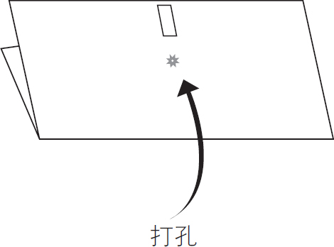
图4-10
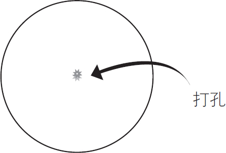
图4-11
将圆盘放在纸盖子里，并小心地将外盖上的黄铜纸扣或回形针的固定夹推入并穿过圆盘的孔洞，如图4-12所示。
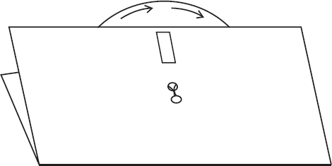
图4-12
检查卡片的正面和背面插画上的微积分基础指南，然后在表盘周围找出第二个点与第一个点相匹配，并在操作中慢慢感受“极限”，见图4-13。
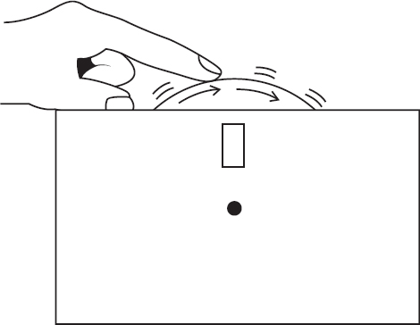
图4-13
下图是实验的一个举例说明。
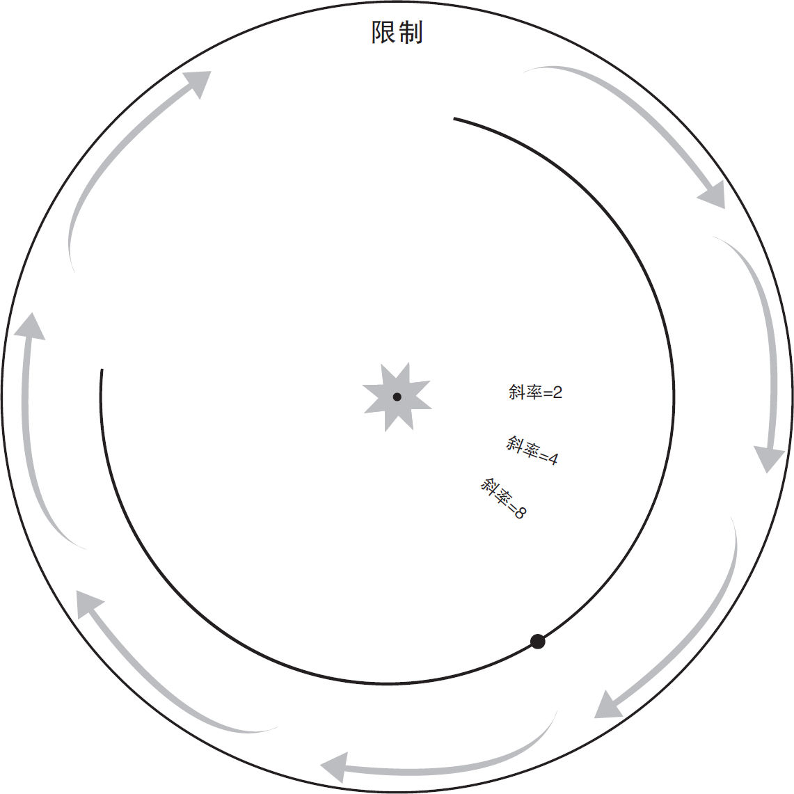
通过微积分，可以确定不断变化的事物的变化率，如速率、增长率或体积水平。
f （x ）＝x 2
注意钟形瓶的斜率与函数曲线相似，底部慢，顶部附近快。
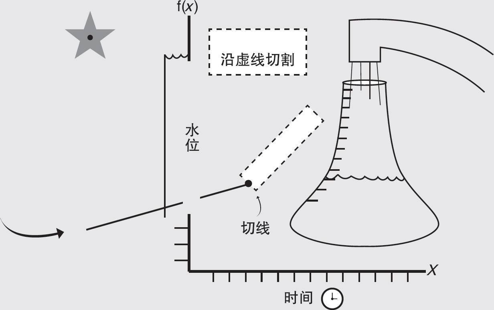
确定直筒瓶充水速率是很容易的。你可以用斜率公式预测它在任何时间点的水位。
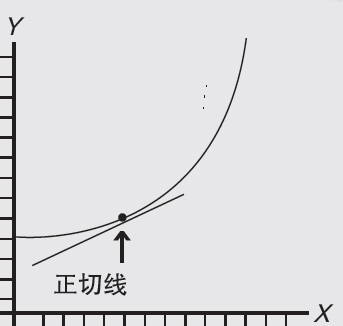
当你拉近两点间的距离时，曲线就近似于直线。让曲线上第二个点无限接近第一个点，但不与之重合，此时取极限可以计算出两点间距离接近零时的结果。（因为不能除以零。）

变化率显示为曲线。在曲线上找到切线的斜率可以让你确定那个点的瞬时速率。
求钟形瓶的水位变化速率需要用到微积分
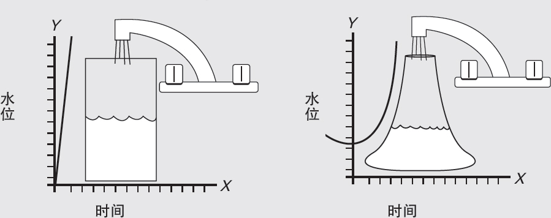
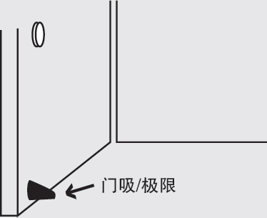
极限像门吸一样，让门无限靠近墙壁而不碰到墙壁。
极限的符号看起来像这样：
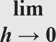
它表示变量h 可以接近但永远不能达到零。